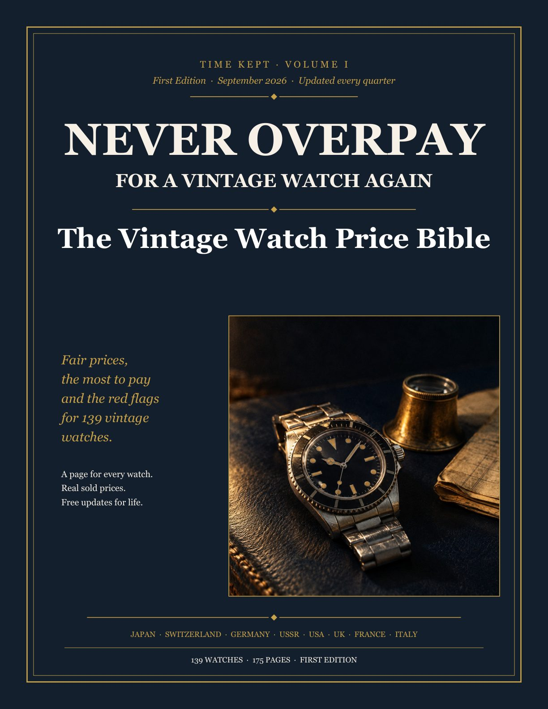

From $20 Casios to five-figure Rolex divers.
Seiko, Omega, Rolex, Heuer, Hamilton, Vostok and dozens more. Each watch gets its own page: what it is, what it sells for, the most you should pay and the tricks sellers use on it.

The Vintage Watch Price Bible
Price tables for eight countries, and a page for every watch in them. How to buy from Japan without the fees eating the saving. What a service will really cost. How to ask for a lower price without being rude. And three indexes, so you can find any watch in seconds by name, by the number on the caseback or by budget.
In the five real sales below, buyers paid about $1,000 each over the fair range. The book costs $39.
What you get
- The book, 175 pages you can read on a phone, tablet or computer, or print at home
- A page for every watch with its fair range, max pay, trend and red flags
- Recent sales for the verified watches, straight from eBay
- The Japan buying guide, every fee added up from auction to your door
- The 60-second check, seven questions to ask before you buy anything
- Every future edition, emailed to you each quarter at no cost
Instant download. Pay once, keep it forever. 30 days to change your mind.
What overpaying looks like.
Five real eBay sales from the last three months. On the left, the most someone paid. On the right, the fair range in the book. A few top sales are exceptional watches. Most aren’t, and the book shows you how to tell which is which.
What someone paid
Source: eBay sold listings, July to September 2026.
Fair range in the book
The fair range is the middle half of recent sales of original watches.
eBay sold listings, July to September 2026. The fair range is the middle half of recent sales of original watches.
Almost $5,000 over the fair range, on five watches. The Captain Willard buyer alone paid about $1,900 more than the top of the range. That’s nearly fifty copies of this book.
Look up a watch before you buy it.
Here are ten of the 139 watches, with the same numbers you get in the book. Pick one.
The other 129 are in the book, each with its own page.
Get all 139 watches, $39 →What’s in the 175 pages.
Eight countries and a page for every watch, plus the chapters that save you money before you even pick one. A few of the watches you’ll find:
Japan, 46 watches
The best value in vintage, and the most faked.
- The Seiko ‘Pogue’ and the ‘Captain Willard’
- King Seiko 45KS and 44KS
- Grand Seiko, from the First to the 61GS
- The 62MAS and the Hi-Beat divers
- Citizen, Orient and Casio, from $20
Switzerland, 34 watches
Where the big money hides the big traps.
- Omega Speedmaster, pre-Moon and Professional
- Rolex Submariner, GMT-Master, Explorer, Datejust
- Tudor Submariner and the ‘Snowflake’
- Heuer Carrera and Autavia
- Tissot, Certina and Eterna under $600
United States, 18 watches
Railroad pocket watches and military field watches.
- Hamilton Ventura and the Electric 500
- Bulova Accutron Spaceview and Astronaut
- Military field and dive watches
- Hamilton 992B and Illinois Bunn Special
- Elgin, Waltham, Gruen and Timex
Soviet Union, 14 watches
Cheap, tough and full of made-up stories.
- Poljot Sturmanskie, the Gagarin watch
- The Strela chronograph
- Vostok Amphibia and Komandirskie
- Raketa Big Zero and Copernicus
- Pobeda, Slava and Luch
France and Italy, 10 watches
Pilots, divers and good design.
- Breguet Type XX
- Dodane Type 21 and Airain Type 20
- Yema Superman and Rallygraf
- LIP Nautic-Ski and Mach 2000
- Panerai before Vendôme
UK and Germany, 17 watches
Everest, the broad arrow and the Bauhaus.
- Smiths De Luxe ‘Everest’
- W10, G10 and the Dirty Dozen
- Junghans Max Bill and J88
- Hanhart 417 and the wartime B-Uhr
- GUB, Stowa, Rotary and more
Before you buy, 4 chapters
Stop the bad buy before it starts.
- How to read a vintage watch like a pro
- Redials, franken watches and polished cases
- Gold filled, gold plated or solid gold
- The 60-second check for any listing
Buying smart, 5 chapters
Pay less, and know what it really costs.
- Where to buy, and where to walk away
- The true cost of buying from Japan
- Service, parts and other hidden costs
- How to negotiate, with words you can use
- Market watch: buy now, rising, overpriced
Easy to read. Easy to find your way around.
Tap any watch name and you jump to its page. Tabs on the edge of every page take you to each country. Tap a page below to see it bigger.
Who’s behind it.
Time Kept is a YouTube channel about vintage watches: where they came from, what they’re worth and how buyers get caught out. Under almost every video, someone asks the same thing. Is this price fair? Is that dial original? What should I pay?
This book is the long answer. The prices start from real sold listings, never asking prices. Every watch comes with the red flags we’ve learned to look for. And since the market keeps moving, a new edition comes out every quarter, free for everyone who bought it.
When you buy a vintage watch, you should know what it’s worth before the seller tells you.Watch the channel →
Questions people ask first.
Where do the prices come from?
From real sales: eBay sold listings, auction results and collector sales. The fair range is the middle half of recent sales of good, original watches. Each page tells you whether its price has been checked against recent sales or is still an estimate for the next edition to confirm.
I’m not a collector. Is it for me?
Yes. Most readers want one or two good watches and don’t want to get stung. It’s written in plain English, in big type, with no jargon you have to look up.
Is it only about Seiko?
No. Japan has the biggest chapter because that’s where the best value is, but the book also covers Swiss, German, Soviet, American, British, French and Italian watches.
What format is it?
A 175-page PDF. It opens on any phone, tablet or computer and prints fine at home. Every watch name is a link, so on a screen you can jump straight to its page.
How do I get the updates?
Each new edition is emailed to the address you bought with, every quarter. You can also download the latest version any time from your purchase email.
Is this financial advice?
No. It’s a buyer’s guide to help you pay a fair price. It won’t tell you what to buy to make money, and it isn’t connected to any watch brand.
What if it’s not for me?
Email us within 30 days and you’ll get a full refund. No forms, no questions.
One bad buy costs more than this book. Many times over.
$39, paid once. You get the PDF straight away, every future edition free, and 30 days to ask for your money back.
Get the book, $39 →